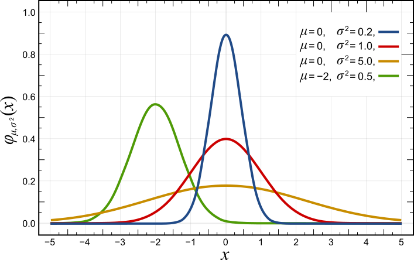
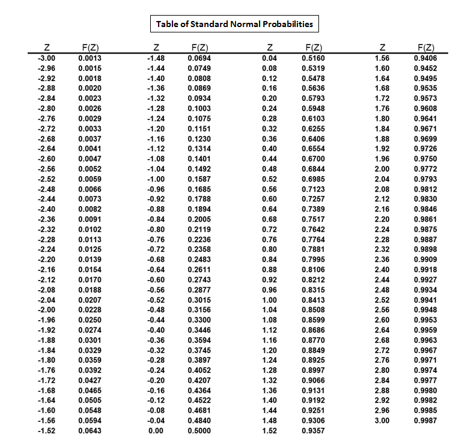
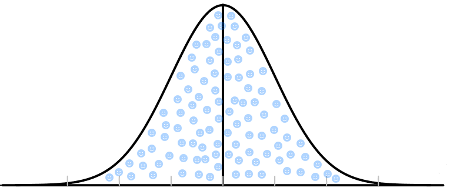

The Normal Distribution
Measure enough of almost anything that varies for lots of small, independent reasons — heights, birth weights, test scores, the error in a laboratory instrument — and the histogram tends to pile up in the middle and thin out symmetrically on both sides. That shape has a name: the normal distribution, or the bell curve. It matters far beyond its own good looks, because once you know a variable is roughly normal, two numbers — the mean and the standard deviation — let you answer questions about any value in the distribution. This chapter teaches you to read the curve, to reason with the 68–95–99.7 rule, to convert any score into a z-score, to turn that z-score into a probability, and to run the whole machine backward when you are handed a percentile instead of a score. There is arithmetic here, but it is all addition, subtraction, multiplication, and division — nothing harder.
By the end of this chapter you can
- List the defining properties of a normal curve and explain what μ and σ each control.
- Explain why probability for a continuous variable is an area, not a height, and why total area equals 1.
- Apply the empirical rule (68–95–99.7) to estimate proportions above, below, and between values.
- Compute a z-score with z = (x − μ) ÷ σ and interpret its sign and size correctly.
- Use z-scores to compare values measured on different scales.
- Read a standard normal table to find left-tail, right-tail, and between-two-values probabilities.
- Work backward from a percentile to a raw score using x = μ + zσ.
- Recognize when the normal model does not apply, and avoid the classic misreadings.
Section 1The normal curve

What the shape is telling you
A normal distribution is a smooth, symmetric, single-peaked curve — the bell curve. It is not a picture of data you collected; it is a model, an idealized mathematical shape that real data can resemble more or less closely. When we say "adult female heights are approximately normal," we mean the histogram of real heights looks a lot like that curve, close enough that we can use the curve's mathematics to make good predictions.
Every normal curve is completely pinned down by exactly two numbers, called parameters. The mean μ (mu) sits at the center and locates the peak. The standard deviation σ (sigma) controls the spread: a small σ gives a tall, narrow curve where values huddle near the middle; a large σ gives a short, wide curve where values sprawl. Change μ and the whole curve slides sideways without changing shape. Change σ and the curve stretches or squeezes without moving its center. Statisticians write this compactly as X ~ N(μ, σ2), read "X follows a normal distribution with mean μ and variance σ2."
The equation behind the picture is f(x) = [ 1 ÷ (σ √(2π) ) ] · e−(x − μ)² / (2σ²). You will never have to evaluate it by hand, and nothing in this chapter depends on it. It is worth seeing once only so you can confirm the claim above: the only symbols in it besides x are μ and σ. Two numbers, one curve.
The properties, one at a time
Six features define the shape, and every technique in the rest of this chapter leans on one of them.
| Property | What it means | Why it matters |
|---|---|---|
| Symmetric | The left half is a mirror image of the right half about μ | Lets you convert a right-tail question into a left-tail one, and vice versa |
| Unimodal | Exactly one peak, located at μ | A two-humped histogram is not normal — do not use these tools on it |
| Mean = median = mode | All three centers land on the same point | The center is unambiguous; 50% of the area lies on each side |
| Total area = 1 | The area under the whole curve is exactly 1 (100%) | Area is probability — this is what makes the curve usable |
| Asymptotic tails | The tails approach the axis forever but never touch it | No value is strictly impossible, but extremes are vanishingly rare |
| Inflection at μ ± σ | The curve switches from bending down to bending out one σ from center | You can literally see σ on the picture — it is where the curve changes its bend |
The fourth property deserves a slow read, because it is where most students first get uneasy. For a continuous variable — one that can take any value in a range, like height in inches carried out to as many decimals as you like — the probability of landing on exactly one specific value is zero. Nobody is exactly 64.000000… inches tall. So we never ask "what is the probability height equals 64?" We ask "what is the probability height falls between 63 and 65?", and the answer is the area under the curve over that stretch of the axis. Height of the curve is density, not probability. Area is probability.
A practical consequence: for continuous distributions, P(X < 64) and P(X ≤ 64) are the same number, because the single point 64 contributes zero area. That is not true for the discrete distributions of Chapter 6, and it trips people up on exams.
How close to normal does real data have to be?
Close enough, and no closer. Real heights are bounded below by zero and above by about nine feet; the normal curve technically extends to infinity in both directions. Real test scores are integers; the curve is smooth. None of that matters in practice, because the curve assigns so little area to the impossible regions that the error is negligible. What does matter is gross violations: strong skew, two peaks, or a hard boundary sitting close to the mean. Income is the classic bad fit — it is right-skewed, with a long tail of high earners, so its mean sits well above its median and the empirical rule you are about to learn will give you badly wrong answers.
- A normal distribution is a symmetric, unimodal, bell-shaped model defined completely by μ (center) and σ (spread).
- Mean, median, and mode coincide at μ; changing μ slides the curve, changing σ widens or narrows it.
- Area under the curve is probability, and the total area is 1; the height of the curve is density, not probability.
- The model is an approximation — do not use it on strongly skewed or two-peaked data.
Section 2The empirical rule in action

The rule, and the finer breakdown
Because every normal curve has the same shape, the proportion of area inside a given number of standard deviations is always the same, no matter what the units are. That constancy is the empirical rule, also called the 68–95–99.7 rule:
- About 68% of values fall within μ ± 1σ (exactly 68.27%).
- About 95% of values fall within μ ± 2σ (exactly 95.45%).
- About 99.7% of values fall within μ ± 3σ (exactly 99.73%).
Split those bands in half using symmetry and you get a map of the curve precise enough for most quick reasoning. Each half-band below is one side of the center.
| Region | Share of the area | Running total from the left |
|---|---|---|
| Below μ − 3σ | 0.15% | 0.15% |
| μ − 3σ to μ − 2σ | 2.35% | 2.5% |
| μ − 2σ to μ − 1σ | 13.5% | 16% |
| μ − 1σ to μ | 34% | 50% |
| μ to μ + 1σ | 34% | 84% |
| μ + 1σ to μ + 2σ | 13.5% | 97.5% |
| μ + 2σ to μ + 3σ | 2.35% | 99.85% |
| Above μ + 3σ | 0.15% | 100% |
Memorize the sequence 0.15, 2.35, 13.5, 34 — then 34, 13.5, 2.35, 0.15 going back out. Those eight numbers sum to 100% and answer a surprising share of exam questions with no table at all.
A worked example
Suppose adult female heights in a large population are approximately normal with μ = 64.0 inches and σ = 2.5 inches. First, build the ruler by marking off standard deviations from the center:
- μ ± 1σ: 64.0 − 2.5 = 61.5 and 64.0 + 2.5 = 66.5 → about 68% of women are between 61.5 and 66.5 inches.
- μ ± 2σ: 64.0 − 5.0 = 59.0 and 64.0 + 5.0 = 69.0 → about 95% are between 59.0 and 69.0 inches.
- μ ± 3σ: 64.0 − 7.5 = 56.5 and 64.0 + 7.5 = 71.5 → about 99.7% are between 56.5 and 71.5 inches.
Now answer four questions using only that ruler and the table above.
(a) What percent are taller than 69.0 inches? 69.0 is exactly μ + 2σ. The middle 95% lies inside ±2σ, so 100% − 95% = 5% lies outside. Symmetry splits that 5% evenly between the two tails: 5% ÷ 2 = 2.5%.
(b) What percent are shorter than 61.5 inches? 61.5 is μ − 1σ. Outside ±1σ lies 100% − 68% = 32%, split evenly: 32% ÷ 2 = 16%.
(c) What percent are between 66.5 and 69.0 inches? That is the band from μ + 1σ to μ + 2σ. Take the difference of the two symmetric bands and halve it: (95% − 68%) ÷ 2 = 27% ÷ 2 = 13.5%.
(d) What percent are between 59.0 and 66.5 inches? Split at the mean. From 59.0 (μ − 2σ) up to 64.0 is half of the 95% band = 47.5%. From 64.0 up to 66.5 (μ + 1σ) is half of the 68% band = 34%. Add them: 47.5% + 34% = 81.5%.
Notice the pattern in all four: draw the curve, mark μ and the three standard-deviation ticks on each side, shade what the question asks for, and add or subtract the block percentages. The sketch is not optional decoration — it is the method.
Where the rule stops working
The empirical rule is a fact about normal distributions only. Apply it to right-skewed data such as household income or hospital length of stay and it will overstate the left tail and understate the right, sometimes badly. For a distribution of unknown shape there is a weaker but universal backstop, Chebyshev's inequality: at least 1 − 1/k2 of any distribution lies within k standard deviations of the mean, for any k > 1. That guarantees at least 75% within 2σ and at least 88.9% within 3σ — true always, but much looser than 95% and 99.7%. The precision of the empirical rule is the reward for the normal assumption being justified.
- The empirical rule: about 68% / 95% / 99.7% of a normal distribution lies within 1, 2, and 3 standard deviations of μ.
- Symmetry lets you halve any band: outside ±2σ is 5%, so each tail is 2.5%.
- The block percentages 0.15 / 2.35 / 13.5 / 34 (each side) answer most questions with no table.
- The rule applies to approximately normal data only; Chebyshev's inequality is the weaker rule that always holds.
Section 3The standard normal

One curve to rule them all
There are infinitely many normal curves — one for every pair (μ, σ). Nobody wants infinitely many tables. The fix is to rescale every normal distribution onto a single common curve, the standard normal distribution: the normal distribution with μ = 0 and σ = 1, written Z ~ N(0, 1).
The rescaling is done with the z-score:
z = ( x − μ ) ÷ σ
Read it as two steps in plain English. Subtract the mean: this recenters the value, telling you how far above or below average it sits, in the original units. Divide by the standard deviation: this converts that distance from original units into "standard deviations," which have no units at all. A z-score of 1.5 means "one and a half standard deviations above the mean," whether the original data were inches, dollars, milliseconds, or exam points.
The sign carries meaning. Positive z means above the mean, negative z means below, and z = 0 means exactly at the mean. The magnitude carries the rest: |z| under 1 is thoroughly ordinary, around 2 is somewhat unusual, and 3 or more is genuinely rare — only about 0.3% of a normal distribution sits beyond ±3.
Worked example: one score, two ways
An exam has μ = 72 points and σ = 8 points. A student scores x = 86.
z = (86 − 72) ÷ 8 = 14 ÷ 8 = 1.75
The score is 14 points above average, and 14 points is 1.75 standard deviations. Now a second student scores x = 60:
z = (60 − 72) ÷ 8 = (−12) ÷ 8 = −1.50
That student sits one and a half standard deviations below the mean. Note that z = −1.50 and z = +1.50 are the same distance from center in opposite directions — a fact we will exploit constantly in Section 4.
Why standardizing is worth the trouble: comparing apples to oranges
The real power of a z-score is that it strips away the units and the scale, so scores from completely different measurements become comparable. Suppose a student takes two exams:
| Exam | Score x | Mean μ | SD σ | z = (x − μ) ÷ σ | Reading |
|---|---|---|---|---|---|
| Exam A | 86 | 72 | 8 | (86 − 72) ÷ 8 = +1.75 | 1.75 SD above average |
| Exam B | 91 | 85 | 6 | (91 − 85) ÷ 6 = +1.00 | 1.00 SD above average |
| Exam C | 68 | 75 | 10 | (68 − 75) ÷ 10 = −0.70 | 0.70 SD below average |
The raw scores say Exam B (91) was the best performance and Exam A (86) second. The z-scores say otherwise: relative to everyone else who took each test, Exam A was the strongest showing at +1.75, ahead of Exam B at +1.00. The 91 looks impressive until you notice the class averaged 85 with a tight spread, so a 91 was only one standard deviation up. This is exactly why z-scores appear on growth charts, standardized tests, and laboratory reference ranges — they answer "how unusual is this?" rather than "how big is this?"
The reverse conversion is just algebra. Multiply both sides of the z-score formula by σ and add μ:
x = μ + zσ
Check it on Exam A: x = 72 + (1.75)(8) = 72 + 14 = 86. It returns the original score, as it must. Section 5 is built entirely on this rearranged form.
- The standard normal distribution has μ = 0 and σ = 1, written Z ~ N(0, 1).
- z = (x − μ) ÷ σ converts any value into "number of standard deviations from the mean," a unitless quantity.
- Sign gives direction (above or below μ); magnitude gives unusualness, so z-scores let you compare different scales.
- x = μ + zσ converts back; standardizing never changes the shape of a distribution.
Section 4Finding probabilities

What the table actually gives you
A standard normal table (or z-table) is a lookup of areas. The standard version used almost everywhere reports cumulative left-tail area: the entry for a given z is the proportion of the distribution lying below that z, written Φ(z) or P(Z < z). So the entry for z = 0.00 is 0.5000 — half the curve lies below center — and the entries climb toward 1 as z increases.
Reading it takes two coordinates. The row gives z to one decimal place; the column gives the hundredths digit. To find Φ(1.75), go down to the row 1.7 and across to the column .05:
| z | .00 | .01 | .02 | .03 | .04 | .05 | .06 | .07 |
|---|---|---|---|---|---|---|---|---|
| 1.5 | .9332 | .9345 | .9357 | .9370 | .9382 | .9394 | .9406 | .9418 |
| 1.6 | .9452 | .9463 | .9474 | .9484 | .9495 | .9505 | .9515 | .9525 |
| 1.7 | .9554 | .9564 | .9573 | .9582 | .9591 | .9599 | .9608 | .9616 |
| 1.8 | .9641 | .9649 | .9656 | .9664 | .9671 | .9678 | .9686 | .9693 |
| 1.9 | .9713 | .9719 | .9726 | .9732 | .9738 | .9744 | .9750 | .9756 |
Φ(1.75) = 0.9599. That single number means: 95.99% of a standard normal distribution lies below z = 1.75. Everything else in this section is arithmetic performed on numbers like that one.
The three question types
Every normal probability problem is one of three shapes, and each has a one-line rule. In all of them, first convert your raw value to a z-score, then look it up.
| Question | Rule | Why |
|---|---|---|
| P(X < a) — left tail | Φ(za) | Read the table directly; it already reports left-tail area |
| P(X > a) — right tail | 1 − Φ(za) | Total area is 1, so what is not below must be above |
| P(a < X < b) — between | Φ(zb) − Φ(za) | Take everything below the top, remove everything below the bottom |
Two habits keep you out of trouble. Sketch first: draw the bell, mark the mean, mark your value, shade the region the question asks about. If your final answer is more than 0.5 but you shaded a small sliver, you have made an error. Sanity-check against the empirical rule: an area beyond z = 2 should be near 2.5%, an area below z = 0 should be exactly 0.5000.
Worked example: the same exam, three questions
Exam scores are approximately normal with μ = 72 and σ = 8.
(a) What proportion of students score below 86?
Step 1 — standardize: z = (86 − 72) ÷ 8 = 14 ÷ 8 = 1.75.
Step 2 — look up: Φ(1.75) = 0.9599.
Step 3 — answer: P(X < 86) = 0.9599, about 96.0% of students score below 86.
(b) What proportion score above 86?
Same z = 1.75. This is a right tail, so subtract from 1:
P(X > 86) = 1 − 0.9599 = 0.0401, about 4.0%. Sensible: (a) and (b) must add to 1, and 0.9599 + 0.0401 = 1.0000.
(c) What proportion score between 64 and 86?
Step 1 — standardize both ends.
Lower: z = (64 − 72) ÷ 8 = (−8) ÷ 8 = −1.00.
Upper: z = (86 − 72) ÷ 8 = 1.75.
Step 2 — look up both. Φ(1.75) = 0.9599. Φ(−1.00) = 0.1587.
Step 3 — subtract: 0.9599 − 0.1587 = 0.8012, about 80.1%.
Sanity check: the interval runs from 1σ below the mean to 1.75σ above, so it should comfortably exceed the 68% that sits inside ±1σ but stay under 95%. It does.
If your table lists only positive z values, get Φ(−1.00) from symmetry: Φ(−z) = 1 − Φ(z), so Φ(−1.00) = 1 − 0.8413 = 0.1587. Same number.
Worth committing to memory, because they recur throughout the rest of statistics:
| z | Φ(z) = area to the left | Area to the right | Note |
|---|---|---|---|
| 0.00 | 0.5000 | 0.5000 | The mean splits the curve in half |
| 1.00 | 0.8413 | 0.1587 | Gives the 68% rule: 0.8413 − 0.1587 = 0.6826 |
| 1.645 | 0.9500 | 0.0500 | Top 5% cutoff |
| 1.96 | 0.9750 | 0.0250 | The real "95%" number: 2.5% in each tail |
| 2.00 | 0.9772 | 0.0228 | Gives the 95.45% rule |
| 2.576 | 0.9950 | 0.0050 | Middle 99% |
| 3.00 | 0.9987 | 0.0013 | Gives the 99.73% rule |
- The z-table gives Φ(z) = P(Z < z), the area to the left; row = tenths, column = hundredths.
- Left tail: read directly. Right tail: 1 − Φ(z). Between: Φ(zupper) − Φ(zlower).
- Symmetry gives negative values: Φ(−z) = 1 − Φ(z); and P(X < a) equals P(X ≤ a) because the variable is continuous.
- Always sketch and shade before computing, and check the answer against the empirical rule.
Section 5Working backward

The question runs the other way
So far you have been handed a value and asked for a proportion. Many real questions arrive in the opposite order: What score puts a student in the top 10%? What birth weight is the 5th percentile? Where do we set the cutoff so that 95% of parts pass inspection? These are inverse problems, and they run the same machinery backward.
Begin with the vocabulary. The kth percentile is the value with k percent of the distribution below it. The 90th percentile is the value that 90% of the data falls under, and 10% exceeds. Percentiles are always stated as left-tail areas, which is convenient, because that is exactly what the z-table reports.
The three-step recipe:
- Convert the wording into a left-tail area. "90th percentile" is already 0.9000. "Top 10%" is not 0.10 — the cutoff for the top 10% has 90% below it, so the area is 0.9000 as well. "Bottom 5%" is 0.0500.
- Search the body of the table for that area and read off the z. This is the reverse lookup: you scan the interior probabilities for the one closest to your target, then read the z from its row and column.
- Un-standardize with x = μ + zσ. That converts the position back into the original units.
Worked example: the 90th percentile
Same exam: μ = 72, σ = 8. What score is the 90th percentile?
Step 1 — target left-tail area = 0.9000.
Step 2 — hunt in the body of the table. The nearest entries are Φ(1.28) = 0.8997 and Φ(1.29) = 0.9015. The first is off by 0.0003, the second by 0.0015, so take z = 1.28.
Step 3 — un-standardize:
x = μ + zσ = 72 + (1.28)(8) = 72 + 10.24 = 82.24
A score of about 82.2 marks the 90th percentile: roughly 90% of students score below it, 10% above. Check the answer for plausibility — 82.24 is above the mean, as any percentile above 50 must be, and it is a bit more than one standard deviation up, which fits an area of 0.90 sitting between Φ(1.00) = 0.8413 and Φ(1.50) = 0.9332.
Two more, including a negative z
(a) What score separates the top 5%? The cutoff has 95% below it, so the target area is 0.9500 and z = 1.645 (the table straddles it: Φ(1.64) = 0.9495, Φ(1.65) = 0.9505, so 1.645 is the standard interpolated value).
x = 72 + (1.645)(8) = 72 + 13.16 = 85.16. Scores at or above about 85.2 are in the top 5%.
(b) What score is the 25th percentile (the first quartile)? Target area 0.2500, which is below the mean, so the z must be negative. By symmetry, Φ(−0.67) = 1 − Φ(0.67) = 1 − 0.7486 = 0.2514, and Φ(−0.68) = 1 − 0.7517 = 0.2483. The value 0.2500 sits between them; the conventional value is z = −0.67 (more precisely −0.6745).
x = 72 + (−0.67)(8) = 72 − 5.36 = 66.64. About a quarter of students score below 66.6.
The single most common error in inverse problems is dropping the minus sign. If the percentile is below 50, the z must be negative and the answer must land below the mean. If your arithmetic hands you a value above μ for the 25th percentile, you lost a sign somewhere.
These z values recur so often that they are worth keeping close:
| Percentile | Left-tail area | z | Score when μ = 72, σ = 8 (x = 72 + 8z) |
|---|---|---|---|
| 1st | 0.0100 | −2.326 | 72 − 18.61 = 53.39 |
| 5th | 0.0500 | −1.645 | 72 − 13.16 = 58.84 |
| 10th | 0.1000 | −1.282 | 72 − 10.26 = 61.74 |
| 25th | 0.2500 | −0.674 | 72 − 5.39 = 66.61 |
| 50th | 0.5000 | 0.000 | 72.00 |
| 75th | 0.7500 | +0.674 | 72 + 5.39 = 77.39 |
| 90th | 0.9000 | +1.282 | 72 + 10.26 = 82.26 |
| 95th | 0.9500 | +1.645 | 72 + 13.16 = 85.16 |
| 99th | 0.9900 | +2.326 | 72 + 18.61 = 90.61 |
Finding a symmetric middle interval
A close cousin: which two scores enclose the middle 95%? Symmetry does the work. If 95% is in the middle, 5% is left over, split into 2.5% in each tail. So the lower bound has left-tail area 0.0250 (z = −1.96) and the upper bound has left-tail area 0.9750 (z = +1.96). Then:
Lower: x = 72 + (−1.96)(8) = 72 − 15.68 = 56.32
Upper: x = 72 + (1.96)(8) = 72 + 15.68 = 87.68
The middle 95% of scores runs from about 56.3 to 87.7. This calculation is the direct ancestor of the confidence interval, and it is where the number 1.96 first earns its keep.
- A percentile is stated as a left-tail area: the kth percentile has k% of the distribution below it.
- Inverse problems go area → z → x, using x = μ + zσ.
- "Top 10%" means a left-tail area of 0.90, not 0.10, and percentiles below 50 give a negative z — losing that sign is the classic error.
- A symmetric middle interval splits the leftover area evenly between the two tails: middle 95% → z = ±1.96.
The chapter in one breath
- The normal distribution is a symmetric, unimodal, bell-shaped model fixed entirely by two parameters: μ (center) and σ (spread).
- For a continuous variable, area under the curve is probability; the total area is 1, and the probability of any single exact value is 0.
- The empirical rule puts about 68%, 95%, and 99.7% of the data within 1, 2, and 3 standard deviations of the mean — and symmetry lets you halve any band.
- The z-score, z = (x − μ) ÷ σ, rewrites any value as a unitless number of standard deviations from the mean, making different scales comparable.
- The standard normal Z ~ N(0, 1) is the one curve every normal distribution is converted to, so one table serves them all.
- The z-table reports left-tail area Φ(z); right tails are 1 − Φ(z) and between-values are Φ(zupper) − Φ(zlower).
- Running the machine backward — area → z → x = μ + zσ — converts a percentile into a raw score.
- All of it depends on the data being approximately normal; standardizing rescales a distribution but never repairs its shape.
ReferenceWords worth knowing
A quick reference for the terms in this chapter — skim it now, or circle back whenever a word trips you up.
- Area under the curve
- The region between a density curve and the horizontal axis over some interval; for a probability model, this area is the probability of landing in that interval.
- Bell curve
- Informal name for the normal curve, from its symmetric, single-humped shape.
- Chebyshev's inequality
- The guarantee that at least 1 − 1/k2 of any distribution lies within k standard deviations of the mean (k > 1); weaker than the empirical rule but always true.
- Continuous random variable
- A variable that can take any value in an interval; the probability of any single exact value is zero, so probabilities are computed over ranges.
- Cumulative probability
- The total probability at or below a given value — the left-tail area, written Φ(z) for the standard normal.
- Density curve
- A smooth curve whose total enclosed area equals 1, used to model the distribution of a continuous variable.
- Empirical rule
- The 68–95–99.7 rule: in a normal distribution, roughly 68%, 95%, and 99.7% of values lie within 1, 2, and 3 standard deviations of the mean.
- Inflection point
- The point where a curve changes its direction of bending; on a normal curve these sit exactly at μ − σ and μ + σ.
- Lower-tail area
- The proportion of the distribution below a stated value; what a standard normal table reports.
- Mean (μ)
- The center of a normal distribution; for this model it equals the median and the mode.
- Normal distribution
- A symmetric, unimodal, bell-shaped continuous probability model determined completely by μ and σ; written X ~ N(μ, σ2).
- Parameter
- A numerical characteristic of a population or model, such as μ or σ, as opposed to a statistic computed from a sample.
- Percentile
- The value below which a stated percentage of the distribution falls; the 90th percentile has 90% of values beneath it.
- Probability density function
- The equation that produces a density curve; its height is density, not probability.
- Raw score
- A value expressed in its original measurement units, before standardizing.
- Standard deviation (σ)
- The spread of a normal distribution; the distance from the mean to either inflection point.
- Standard normal distribution
- The normal distribution with μ = 0 and σ = 1, written Z ~ N(0, 1); the reference curve every other normal distribution is converted to.
- Standardizing
- Converting values to z-scores by subtracting the mean and dividing by the standard deviation; a linear rescaling that changes center and spread but not shape.
- Symmetric distribution
- One whose left and right halves are mirror images about the center.
- Unimodal
- Having exactly one peak.
- z-score
- The unitless quantity z = (x − μ) ÷ σ, giving how many standard deviations a value sits above (positive) or below (negative) the mean.
- z-table
- A table of standard normal cumulative probabilities, used forward to turn a z into an area and backward to turn an area into a z.